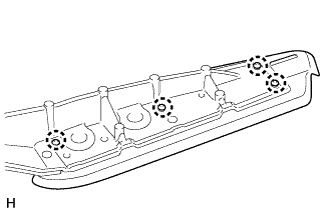
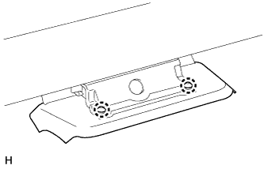

БАГАЖНИК НА КРЫШЕ > РАЗБОРКА |
| 1. СНИМИТЕ ПОДКЛАДКУ ЛЕВОЙ ПЕРЕДНЕЙ ОПОРЫ БАГАЖНИКА НА КРЫШЕ |
Освободите 4 захвата и снимите подкладку передней опоры багажника на крыше.
| *A | Для 5-дверных моделей | *B | Для 3-дверных моделей |
| 2. СНИМИТЕ ПОДКЛАДКУ ЛЕВОЙ ЗАДНЕЙ ОПОРЫ БАГАЖНИКА НА КРЫШЕ |
|  |
Освободите 4 захвата и снимите подкладку задней опоры багажника на крыше.
| 3. СНИМИТЕ ПОДКЛАДКУ ЛЕВОЙ ЦЕНТРАЛЬНОЙ ОПОРЫ БАГАЖНИКА НА КРЫШЕ |
|  |
Освободите 2 захвата и снимите подкладку средней опоры багажника на крыше.